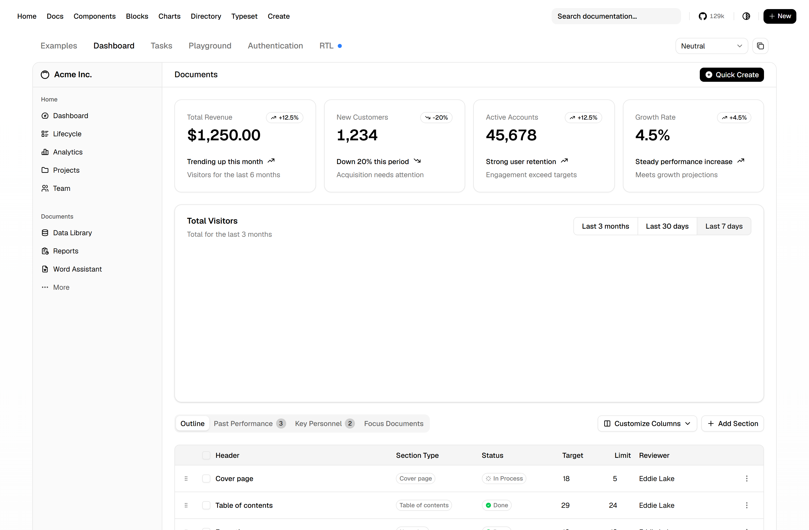
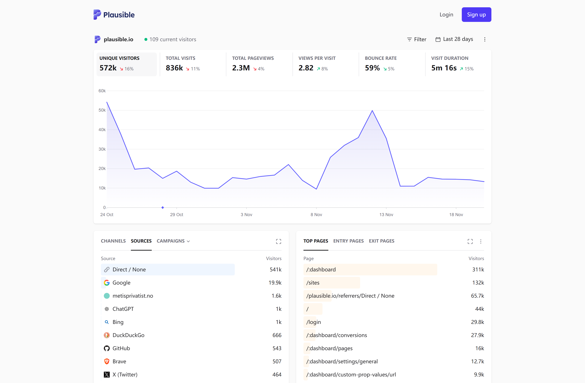
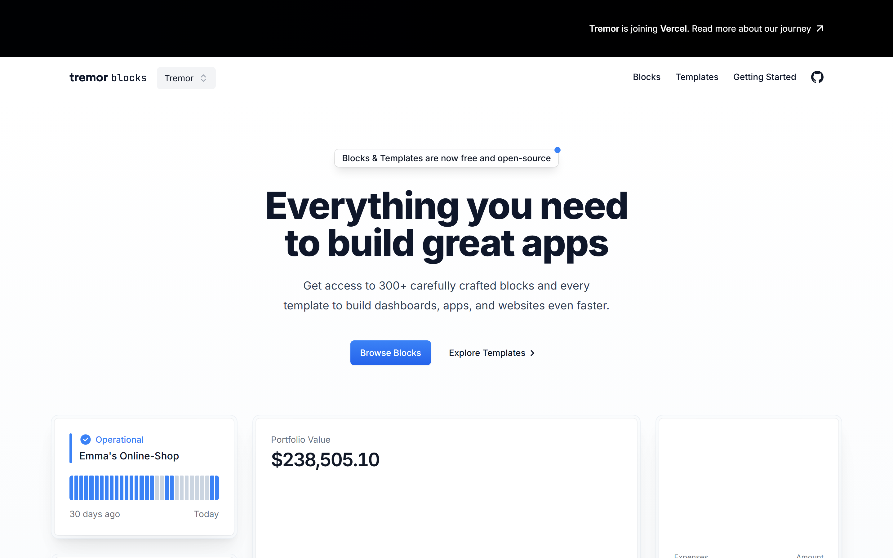
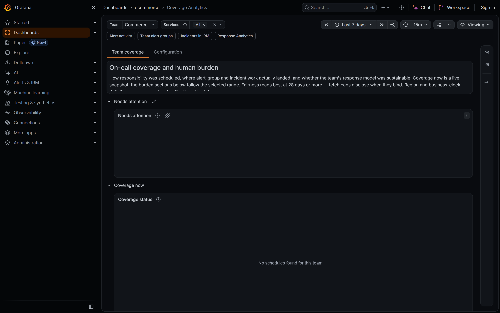

01 · 后台型 · 浅色
02 · 分析型 · 浅色
03 · 组件库 · 浅色
04 · 运维型 · 深色| 来源 | 这一条 | 结论 | 落到我们哪里 |
|---|---|---|---|
| Plausible | 指标带（一条带 4–6 个指标，竖发丝线分隔） | 采用 | 替换现在 3 张独立 KPI 卡 → 一条指标带 |
| Plausible | 条形表（名称 + 背景条 + 右对齐数值） | 采用 | 「接下来要复习的」队列 |
| shadcn | delta 徽章放 KPI 右上 | 采用 | 指标带的 delta 位置 |
| shadcn | 表格上方筛选 tab + 列设置 | 采用 | 文档页 / 任务页（本轮先不动） |
| shadcn | 时间范围分段控件在图表标题右侧 | 采用 | 主图 7 天 / 30 天 / 全部 |
| Grafana | 深色三层表面 | 采用 | 上一轮已做 |
| Grafana | 高密度多面板拼贴 | 不采用 | 我们是学习工具，不是值班台 |
| Tremor | 状态卡样式 | 暂不 | 没有对应业务对象 |
| shadcn | 4 张等宽 KPI 卡 | 不采用 | 等比卡片是我们这次要消灭的形态 |
| Plausible | 顶部 6 个指标全平级 | 不采用 | 我们必须留一个 hero（今天要复习多少），不能全平级 |